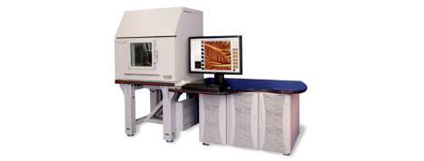

Accessories for Dimension Icon Atomic Force Microscope
General Information
Instrument
Dimension Icon Atomic Force Microscope System
Technique(s)
AFM
MFM
Scheduler
Instrumentation
Dimension ICON Specification
| X-Y scan range | 90μm x 90μm typical, 85μm minimum |
|---|---|
| Z range | 10μm typical in imaging and force curve modes, 9.5μm minimum |
| Vertical noise floor | < 30pm RMS in appropriate environment typical imaging bandwidth (up to 625Hz) |
| X-Y position noise (closed-loop) | ≤0.15nm RMS typical imaging bandwidth (up to 625Hz) |
| X-Y position noise (open-loop) | ≤0.10nm RMS typical imaging bandwidth (up to 625Hz) |
| Z sensor noise level (closed-loop) | 35pm RMS typical imaging bandwidth (up to 625Hz); 50pm RMS, force curve bandwidth (0.1Hz to 5kHz) |
| Integral nonlinearity (X-Y-Z) | < 0.5% typical |
| Sample size/holder | 210mm vacuum chuck for samples, ≤210mm diameter, ≤15mm thick |
| Motorized position stage (X-Y axis) | 180mm × 150mm inspectable area; 2μm repeatability, unidirectional; 3μm repeatability, bidirectional |
| Microscope optics | 5-megapixel digital camera; 180μm to 1465μm viewing area; Digital zoom and motorized focus |
| Controller | NanoScope V |
| Workstation | Integrates all controllers and provides ergonomic design with immediate physical and visual access |
| Vibration isolation | Integrated, pneumatic |
| Acoustic isolation | Operational in environments with up to 85dBC continuous acoustic noise |
| Available AFM modes | Standard modes: ScanAsyst, TappingMode (air), Contact Mode, Lateral Force Microscopy, PhaseImaging, Lift Mode, MFM, Force Spectroscopy, EFM, Surface Potential, Piezoresponse Microscopy, Force Spectroscopy. Optional: PeakForce QNM, TappingMode (fluid), Torsional Resonance Mode, Dark Lift, STM, C-AFM, SSRM, TUNA, TR-TUNA Additional tools: temperature-controlled stage for below freezing to over 100°C and beyond. Gas flow enclosure for ambient control at standard pressure. |
| Certification | CE |